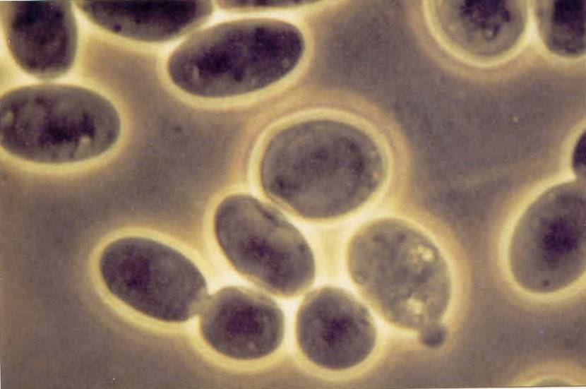
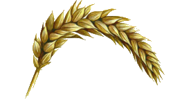
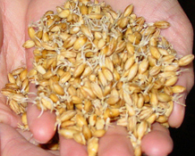

Les concepts
Qu'est-ce que la bière
Les Ingrédients
- L'eau
- L'amidon
- Les levures
Principe du brassage
-
On veut fabriquer de l'alcool,

- les levures vont en fabriquer avec ... 
-
du sucre qui est obtenu ...

-
grace à l'action des amylases sur l'amidon

Les mécanismes en jeu
Ca sert à quoi ?
- L'amidon sert à faire du sucre pour obtenir l'alcool 
-
L'utilisation du houblon

- Donne du goût
- Améliore la conservation (ex: IPA)
-
Où trouve-t-on l'amylase ?
-
Dans la salive

-
Dans une graine qui germe

-
Dans la salive
Le malt
-
On fait germer une graine

- Dès les premiers radicelles, on stoppe la germination 
-
On sèche le malt

-
On peux chauffer pour donner de la couleur

Le houblon
- Donne des saveurs
- Donne de l'amertume
- Permet la conservation de la bière (antiseptique)
-
Unité de mesure: % acidité alpha
- < 6% Houblon arômatique
- > 7%, < 12% Houblon amérisant
- > 12% hardcore
La fermentation
Respiration cellulaire

Concêtement:
- Multiplication des levure et colonisation du liquide: aérobie (consomation d'oxygène)
- Respiration: production d'alcool et de CO2: anérobie (absence d'oxygène)
- Ces réactions produisent de l'énergie
Les bières
Histoire de la bière
- Remonte à l'Egypte antique: zythum
- Les premières traces retrouvées d’une boisson issue de la fermentation de céréales remontent à 12 000 ans avant JC à Jéricho
- Les Romains la produisent en quantité pour les Légions
- Les moines sont à l’origine de l’utilisation du houblon
- En 1435 le mot « bière » est prononcé pour la première fois puis officialisé
La bière en Europe
Les trois grandes familles de bière particulièrement remarquables
- Bières Bèlges Livre de Michael Jackson ISBN 90-5373011-7
- Bières Anglaises (ex. Cask)
- Bières Allemandes soumises à la loi de pureté (Reinheitsgebot ): une boisson peut avoir le nom de « bière » ssi les ingrédients sont uniquement eau, orge, houblon, levure https://www.maloan.fr/blog/decret-de-purete-biere-allemande
La bière dans le monde
La bière est répandue mondialement. Certain peuples d'Amazonie fabriquaient de la bière en machant du manioc et en le recrachant dans un récipiant. Beaucoup de céréales ont été utilisées: manioc, orge, blé, riz, ...
Les bières contemporaines
Les deux grandes familles
-
Ale
Fermentation haute; température entre 16°c et 20°c
-
Lager
Fermentation basse; température inférieure à 10°c
La couleur c'est le malt
La couleur de la bière est donnée par le degré de torrefaction du malt (mesuré en EBC)
- Blonde: 100% malt blond
- Brune: généralement jusqu'à 10% de malt "chocolat"
- Stout: généralement jusqu'à 10% de malt "chocolat" + méthode différente de brassage
- Ambrée: pourcentage de malt caramel, cristal, ...
- Blanche qui peut être ambrée: 30% minimum de froment
Les autres diversités
-
Lambic, gueuze
- La gueuze est un assemblage de lambics
- Bière à fermentation spontanée (pas d'adjonction de levure)
- Bière acide
- Le goût dépend de la région de brassage
-
Cervoise
- Bière sans houblon
- D'autres herbes sont utilisées (gruit)
Indian Pale Ale
- Bière anglaise destinée à l'export en Inde
- Bière amère car chargée en houblon (conservation)
L'amertume, c'est le houblon